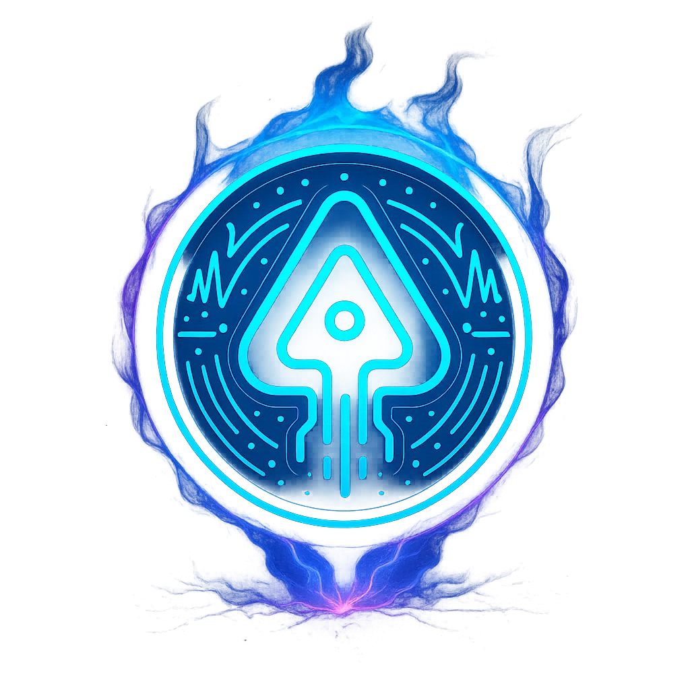

Från jorden till Mars
Kenai – AI för ljud & reels
Spela in, sammanfatta och skapa klipp med AI. Kenai hjälper dig att fatta mer, snabbare – oavsett om det är poddar, möten eller content till dina sociala medier.

Spela in, sammanfatta och skapa klipp med AI. Kenai hjälper dig att fatta mer, snabbare – oavsett om det är poddar, möten eller content till dina sociala medier.